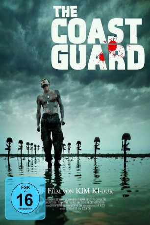

#8588 The Coast Guard
 
 IMDB-Wertung: 6.5 / 10
IMDB-Wertung: 6.5 / 10  Metascore: 0
Metascore: 0 
The Coast Guard ist der achte Film des renommierten südkoreanischen Kim Ki Duks. Das politische Drama spielt an der Grenze von Süd- zu Nordkorea, die von Rekruten bewacht wird. Nachdem es zu einem Unglücksfall gekommen ist, dreht der junge Kang durch.
Jahr: 2002
Dauer: 47 Minuten
FSK: 16
Land: Süd-Korea Studio: I-On New MediaTonspuren:
Untertitel:
Auflösung: SD (704x400) Größe: 648 MB
Genre: Action, Drama, Krieg
Regisseur: Ki-duk Kim
Drehbuch: Ki-duk Kim
Soundtrack: Young-gyu Jang, Byung-hoon Lee
Darsteller:
- Dong-Gun Jang als Kang Sang-byeong
- Hae-jin Yoo als Cheol-gu
 Kang-woo Kim als
Kang-woo Kim als - Tae-woo Kim als
- Jeong-hak Kim als Kim Sang-byeong
- Ji-a Park als Mi-yeong
- Jin Jeong als
- Gu-taek Kim als
- Yun-jae Park als
- Yeong-jae Kim als
- Mi-seong Kim als
- Choe Min als Provost Marshal
- Sang-ok Park als
Datei: X:\HD-Eastern-Modern(A-M)\Coast Guard, The (2002, FSK16, 704x400) CD1.mkv seit 22.03.2018
Festplatte: HD Eastern+Western
 Es gibt insgesamt 104 Filme in der Gruppe 'HD-Eastern-Modern(A-M)'
Es gibt insgesamt 104 Filme in der Gruppe 'HD-Eastern-Modern(A-M)'